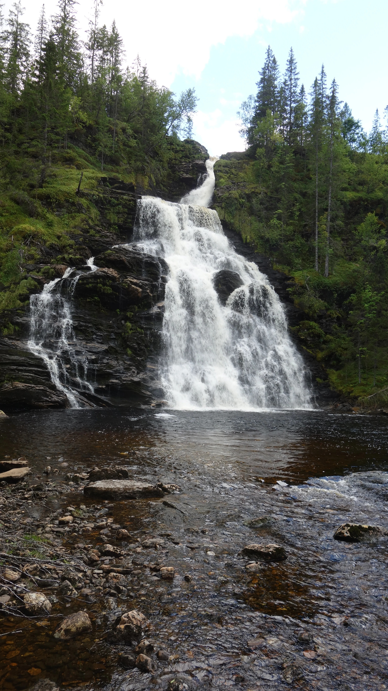

Find Moose
Bucket list
02.08.26

Das war meine bisherige Reise
In Oslo angekommen, bin ich erstmal mit der Bahn zum Holemenkollen gefahren, um mit eigenen Augen zu sehen, wo Fraziska Preuss 2025 den Gesamtweltcup für sich entschieden hat. Gänsehaut.

Wieder auf 0 m.o.h. (= Meter over havet) angekommen, bin ich hier in den Oslofjord gesprungen. Das Wasser war salzig, aber das zählt trotzdem nicht als "Take a swim in the ocean", weil ich umgeben von diesem Holzgerüst war.

Außerdem habe ich bisher folgende Leute getroffen:
- Im ICE: Ein Masseur, der auch astrologische Coachings anbietet
- Im Flixbus: Ein Bikepacker, der schon 22 Länder bereist hat und Schwedisch, Arabisch, Französisch und etwas Englisch kann
- Im Bahnhof Oslo: Eine Bikepackerin, die von Stockholm nach Helsinki geradelt ist
- Im Bahnhof Oslo: Ein Junge, der wollte, dass ich an einem Zweig Lavendel rieche
Abends ging's mir schlecht, wahrscheinlich wegen zu wenig Schlaf und zu vielen Bilar.
03.08.26
Heute bin ich nach 48h am Ziel angekommen. Ich möchte nie wieder zwei aufeinanderfolgende Nächte im Sitzen verbringen. Wenn ich geflogen wäre, hätte ich viel weniger die Abgelegenheit des Ortes gespürt, sondern es wäre viel mehr ein "Mal hier, mal dort" gewesen.
Die Familie und die andere Volunteer sind sehr nett zu mir. Ich bin gespannt, wie es morgen bei der Arbeit sein wird. Auf der Farm leben Pferde, Schafe, Hunde, Hühner und Hasen.
04.08.26
Heute habe ich im Regen gefrorene Fische gehackt, um damit Schlittenhunde zu füttern. Danach war ich bei der Fütterung von Hennen, jungen Hühnern, Katzen, Schafen und Pferden dabei. Danach habe ich Isolierungsplattenpakete von draußen nach drinnen getragen.
Nachmittags habe ich gegessen, geduscht, alles über Wohnmobile in der 40-Jahr-Jubiläumsausgabe von pro mobil gelesen und einen Spaziergang unternommen.
Abends gab's Pfannkuchen.
So sieht es hier aus:

06.08.26
Gestern habe ich ein Loch in eine Kellerwand gebohrhammert. Heute habe ich das im Keller stehende Wasser und den Schlamm durch dieses Loch nach draußen gespült. Davor habe ich Tiere gefüttert. Alle Tiere sind sehr chillig und brauchen nicht viel außer die Hunde. (Um die kümmert sich aber Nuccia).
Gestern haben wir einen kleinen Spaziergang unternommen. Das war die Aussicht (der Berg hinten links ist wahrscheinlich auf Tomma):

Wir sind bis zu einem Wasserfall gelaufen:

Ich habe Hallo (= Hei) und Tschüss (= Har det bra) auf Norwegisch von Lucia, die einen zweihundert Tage-Duolingostreak hat, gelernt.
08.08.26
Gestern hat es den ganzen Vormittag geregnet und uns allen war sehr kalt. Nachmittags habe ich Brot gebacken und habe einen kleinen Spaziergang unternommen. Dabei habe ich die Fähre, die Max noch nehmen wird, gesehen:

Leider regnet es zur Zeit sehr viel und das Panorama ist verhangen (was andererseits zu spektakulären Aufnahmen führt):

Gestern abend habe ich Lucia und Nuccia Cambio beigebracht. Zu dritt macht das Spiel leider nicht so viel Spaß.
Heute war es trocken und ich habe nach der täglichen Fütterungsrunde Schlaglöcher im Schlittenhundegehege mit drei verschiedenen Größen von Steinen gefüllt. Nachmittags waren Lucia, Nuccia und ich auf einem kleinen Pfad oberhalb des Wasserfalls eine kleine Runde wandern. Unterwegs wurden wir von reichen Blaubeerfeldern abgelenkt. Abends gab es anlässlich des Abschieds von Otto (Camper und Bauleiter in einem) eine schwedische norwegische Burrito Taco-Night.
Ich würde gerne die Zeit hier mehr genießen, muss mich aber parallel noch darum kümmern, wie es nach Woofing auf Sjøbakken weitergeht.
09.08.26
Heute und morgen habe ich Freizeit. Morgens habe ich Kaffee in der kleinen Bialetti gekocht. Anschließend war ich kurz im Wasser. Es war sehr kalt aber gar nicht so salzig. Vielleicht weil es so viel regnet. Trotzdem war ich jetzt im Meer. Danach habe ich eine Bewerbung bearbeitet. Nachmittags bin ich mit dem Fahrrad zur Fähre und mit der Fähre nach Nesna gefahren. Jetzt weiß ich wie meine Bleibe für die letzte Woche von der anderen Seite aussieht:

In Nesna habe ich einen Kaffee in einem Cafe getrunken und ein Kvikk Lunsj und eine Waffel mit Brunost von einer Tankstelle gegessen, was finanziell keine gute Entscheidung war. In Nesna gibt es nicht viel, aber dafür eine Uni. Vielleicht zieht es mich einfach wieder dorthin zurück.

Wieder zurück auf der richtigen Seite des Ranfjords bin ich noch schnell auf den 302 Meter hohen Hubul gestiegen, der in keiner außer der nachfolgenden Karte eingezeichnet ist. Deshalb zählt das nicht als Gipfelbesteigung.

Es war sehr nass, aber man hatte eine gute Aussicht:

Nach dem Abendessen konnten wir noch die Abfahrt des Schlittenhundetrainings beobachten:

11.08.26
Gestern bin ich wieder nach Nesna gereist, um in den Supermarkt zu gehen. Mehr ist auch nicht passiert. Heute morgen habe ich wieder Tiere gefüttert und dann in der Schlittenhundgarage aufgeräumt. Nachmittags habe ich Teig für Waffeln und Stockbrot gemacht. Nach dem Abendessen haben Nuccia, Lucia und ich ein Lagerfeuer in der Feuerstelle im Schuppen gemacht.

Ich konnte endlich eines dieser Waffeleisen benutzen, die man direkt ins Feuer legen kann. (Ein Traum vom Schärengartentrip mit Fabi, Ole und Max wird wahr.) Die ersten Waffeln sind angepappt und verbrannt, aber wir haben uns echt gesteigert.

Während des ganzen Feuermachens hat ein deutscher Bikepacker neben uns auf dem Sofa geschlafen.
13.08.26
Gestern und heute habe ich Rasen gemäht. Heute hat es den ganzen Tag geregnet. Heute abend waren wir bei einem wöchentlich stattfindenden Loppis mit Cafe in Levang. Dort habe ich ein super Stück Torte gegessen und zwei klasse Tassen Kaffee getrunken (das war eine echte (schwedische) Filterkaffeeexperience wie ich sie mir gewünscht habe). Außerdem wollte ich als Souvenir eine Tasse mit dem Aufdruck "FJORD SEAFOOD" für 5 NOK kaufen, aber man konnte erst ab 10 NOK mit der Karte zahlen. Ich habe die Tasse dann geschenkt bekommen! Tusen takk! Nicht nur wegen der Tasse war das einfach eine richtig coole Veranstaltung, wo man sich direkt wohlfühlt.
Ich habe heute eine Bewerbung für eine nächste wwoof-location in Schweden geschrieben. Bei richtigen Berufen bin ich nicht weitergekommen.
Übermorgen wird vrstl. Max vorbeiradeln und übernachten. Ich habe echt Respekt vor seiner Leistung bei dem Wetter...
17.08.26
Am Freitag habe ich einen Heuballen auseinandergepflückt, um sicherzugehen, dass kein feuchtes Heu eingelagert wird, und das trockene Heu in eine der Pferdeboxen in der Scheune verfrachtet. Danach war ich kurz in Nesna für einen Shoppingtrip und habe dort eine Postkarte an meine Mama geschrieben, weil sie bald Geburtstag hat. Am Samstag habe ich mit einem dieser tragbaren Rasenhecksler, die vorne alles absäbeln, den Rasen entlang der Zäune zu Matcha verarbeitet. Abends ist dann Max gekommen und wir haben versucht Pizza über dem Feuer zu backen.

Leider ist sie von unten zu einer schwarzen Frisbee verbrannt. Max hat sich aber der Oberseite angenommen. Max hat viel von seiner Reise erzählt. Sie scheint ihm viel Spaß zu bereiten, auch wenn ihm das schlechte Wetter zusetzt. Deshalb ist er froh über jeden überdachten Schlafplatz (auch über das Sofa in meinem Wohnwagen). Tina und ihr Sohn Valentin waren auch über das Wochenende zum Wwoofen da, deshalb waren wir zu sechst am Feuer.
Gestern habe ich vormittags mit Max gefrühstückt und ihn dann zur Fähre begleitet. Gute Fahrt und Hut ab! Nachmittags habe ich den Roman "Der Experte" von Robin Cook, den ich auf dem Campingplatz gefunden habe, ausgelesen. Ich gebe 4 von 5 Sternen. Sympatisch, witzig und berührend, teilweise schräg und brutal. Mit viel medizinischem Fachwissen und der wichtigsten Thriller-Eigenschaft: Spannend und schnell lesbar.
Heute Vormittag war ich im Meer kaltbaden, konnte mich aber sonst zu nichts motivieren und war sehr lange in meinem Wohnwagen. Nuccia ist wieder auf dem Heimweg nach Brüssel. Irgendwann habe ich noch mit Tina und Valentin Dead Man's Draw gespielt und dabei einen Hafermilchcappuccino von Tina getrunken. Danke, das war lecker und hat Spaß gemacht. Zum Abschluss folgt nun eine giftige Einbeere, die man auf keinen Fall mit der Blaubeere verwechseln sollte.

P.S.: Ich habe heute abend Kanelsnurror gebacken

19.08.26
Gestern war das Wetter gut. Es hat nicht geregnet und man konnte die Sonne sehen! Deshalb war ich nach dem vormittäglichen Tiere füttern und Unkraut jäten Feuer und Flamme den ersten Gipfel der Reise zu besteigen. Das Ziel hatte ich schon am Freitag ausgekundschaftet. Es würde der Hamarøytinden werden.

Lucia wollte auch mitkommen und so machten wir uns mit Fahrrad und Fähre auf den Weg zum Berg (rechts im Bild). Auf der Fähre stellten wir fest, dass es bis zur Abfahrt der letzten Fähre nur 6 Stunden sind. Würde das für eine Gipfelbesteigung reichen?

Wir wollten es versuchen! Der Wanderweg war gut ausgeschildert und schön zu gehen. Das Panorama war durchweg schön.

Nach flotten 6.8km und 767hm hatten wir es geschafft. Der Gipfel war erreicht.

Die Aussicht war spektakulär. Man konnte das offene Meer und noch mehr Berge sehen!

Nach unten sind wir dann auch wieder gerast, sodass wir sogar noch die vorletzte Fähre nehmen konnten. Deshalb war ich heute beim Tiere füttern und Unkraut jäten sehr müde. Die Sonne war immernoch draußen und ich habe mir wieder ein Bad im Fjord genehmigt.
20.08.26
Nach der routenmäßigen Fütterung der Tiere habe ich den restlichen Vormittag mit dem Freischneider Stihl FS 89 verbracht. Es ist nicht immer schön mit dem Stihl FS 89, denn er springt nicht immer gleich an, der Fadenverschleiß ist hoch, der Faden klemmt manchmal im Fadenkopf und der Griff verutscht leicht, aber er kommt in Ecken, in die man sonst nicht kommt. Heute Nachmittag haben Lucia und ich Bratkartoffeln, die wir von niederländischen Urlaubern geschenkt bekommen haben, mit Pfifferlingen, die wir von ukrainischen Urlaubern geschenkt bekommen haben, gekocht. Abends waren wir wieder beim Loppis. Es war sehr gut.

Ich habe eine Jacke gefunden und konnte danach bei einem Stück Torte und zwei Tassen Kaffe alles über Käse lernen.

Igår jorden skakade utanför Helgelandskysten. Det var en jordskalv nära staden Ørnes. Man kände skalvet i Sjøbakken. Man kan läsa att skalvet var fyra komma tre på richterskalan. Jordens yta bestå av lösa plattor. Marken börja skaka när plattor rör på sig. Das stand nicht auf meiner Bucketlist.
23.08.26
Am Freitag habe ich Tiere gefüttert und hatte dann wieder eine Session mit dem Stihl FS 89, die wesentlich besser gelaufen ist, weil ich ihn jetzt besser verstehe. Irgendwann hatte ich keinen Bock mehr und habe lieber Unkraut aus dem Sonnenblumenfeld gezogen. Nachmittags war ich wieder kurz im Fjord und habe dann am Feuer gesessen.
Samstag habe ich den Hühner- und Hasenstall saubergemacht und den Tieren Görüşürüz gesagt. Danach habe ich noch einen frisch ausgepackten Heuballen zerpflückt. Mittags haben Lucia und ich Pizza gegessen und abends haben wir Quiche gemacht. Danach sind wir mit Anette (Host) auf Moosesafari gefahren. Wir sind in eine Straße eingefahren, die jetzt eine Sackgasse ist, weil die Fährverbindung am Ende der Straße vor Jahren aufgehoben wurde. Sjøbakken ist rot markiert; die Elchstraße ist mit einem blauen Elch markiert.

Wir sind in der Dämmerung durch ein abgelegenes Tal mit versprenkelten Höfen und hohen Bergketten links und rechts gefahren und alles kam mir verwunschen vor. Vor allem das Dörfchen Bardal. In vielen Häusern brannte Licht und ich habe mir ausgemalt wie es wohl ist dort zu leben. Am ehemaligen Ferjekai kam es mir vor wie das Ende der Welt
Es hat nicht lange gedauert und wir sind an den ersten Elchen vorbeigefahren. Sie grasten auf einer Wiese und erschruken als ich das Autofenster runtergefahren habe.

Elche sind riesige Tiere und dass sie einfach so auf Feldern und in Sichtweite zu den Häusern wild herumlaufen wie in Deutschland vielleicht Storche (mir fällt kein besserer Vergleich ein) ist cool.

Heute habe ich mich von Anette, Andre und Lucia verabschiedet und bin dann mit Fähre und Bus weiter nach Mo i Rana gereist.

Dort angekommen bin ich eine Station zu einem Bahnhof mit Schotterbahnsteig im Nirgendwo gefahren um dann mein Zelt (danke an meinen Bruder, der das Zelt erklettert hat) auf einem Campingplatz aufzustellen, der leider nicht so viel Charme wie Sjøbakken hat.